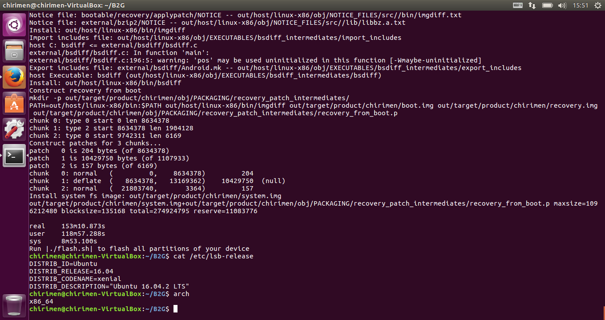

introduce
Build Enviroment is making for Virtualbox Ubuntu version 16.04.2
ubuntu install steps
1. ubuntu-16.04.2-desktop-amd64.iso download.
2. ubuntu-16.04.2 was install to Virtualbox.
3. memory size 8192MB
4. disk size 90GB
Ubuntu16.04.2 latest update steps
$ sudo apt-get -y update
$ sudo apt-get -y upgrade
$ sudo apt-get -y autoremove
$ sudo apt-get -y autoclean
Build Enviroment install steps
B2G OS ビルドの必要条件 より、引用
$ sudo apt-get install make=3.81-8.2ubuntu3
$ sudo apt-mark hold make
上記手順で、「3.81-8.2ubuntu3」がありませんと、表示されますが作業を継続します。
$ sudo dpkg --add-architecture i386
$ sudo dpkg --add-architecture amd64
$ sudo apt-get install --no-install-recommends autoconf2.13 bison bzip2 ccache curl flex gawk gcc g++ g++-multilib git lib32ncurses5-dev lib32z1-dev libgconf2-dev zlib1g:amd64 zlib1g-dev:amd64 zlib1g:i386 zlib1g-dev:i386 libgl1-mesa-dev libx11-dev make zip lzop libxml2-utils openjdk-8-jdk nodejs unzip python
上記手順で、「システムにエラーが発生しました。」と、バグレポート送信の有無の 表示されますが、無視して作業を継続します。 ※自分の場合は、レポート送信をしてから進めました。
Ubuntu16.10 set up steps
Ubuntu16.10の作業ですが、Ubuntu14.04.2にも適用しました。
既定の make のバージョンは 4.1 であり、android のビルドができません。
この問題を回避するには、コンソールで次のコマンドを実行します:
$ wget http://ftp.us.debian.org/debian/pool/main/m/make-dfsg/make_3.81-8.2_amd64.deb
$ sudo dpkg -i make_3.81-8.2_amd64.deb
$ sudo apt-mark hold make
必須のアーキテクチャを追加
$ sudo dpkg --add-architecture i386
$ sudo dpkg --add-architecture amd64
再度ビルド環境インストール
$ sudo apt-get install --no-install-recommends autoconf2.13 bison bzip2 ccache curl flex gawk gcc g++ g++-multilib git lib32ncurses5-dev lib32z1-dev libgconf2-dev zlib1g:amd64 zlib1g-dev:amd64 zlib1g:i386 zlib1g-dev:i386 libgl1-mesa-dev libx11-dev make zip lzop libxml2-utils openjdk-8-jdk nodejs unzip python -y
ccache の設定
ccache -M 50G
adb インストール関連インストール
ubuntu_setup_dev/setup-adb.md より、引用
adb setup
$ sudo apt-get install -y android-tools-adb
adb_usb.ini 編集する
$ mkdir ~/.android
$ vi ~/.android/adb_usb.ini
下記の内容を追記する
# 例：Fx0, Open Web Board
# 他のデバイスも同様に記述する事
# 1 USB VENDOR ID PER LINE.
0x2207
# 2 USB VENDOR ID PER LINE.
0x1004
ルールを設定する
$ sudo vi /etc/udev/rules.d/51-android.rules
下記の内容を追記する
# 例：Fx0, Open Web Board
# 他のデバイスも同様に記述する事
SUBSYSTEM=="usb", ATTR{idVendor}=="2207", MODE="0666", GROUP="plugdev"
SUBSYSTEM=="usb", ATTR{idVendor}=="1004", MODE="0666", GROUP="plugdev"
設定を反映をする。
$ sudo udevadm control --reload
git 関連の手順
- configuration e-mail / git のメールの設定
- configuration username / git のユーザー名の設定
- configuration http.postBuffer / git の http.postBuffer の設定
$ git config --global user.email "you@example.com"
$ git config --global user.name "Your Name"
$ git config --global http.postBuffer 524288000
B2G ビルド作業
- git clone
$ git clone https://github.com/chirimen-oh/B2G.git - config.sh 実行
$ ./config.sh chirimen
config.sh 実行後の、Ubuntu16.04.2用修正作業
- timeconst.plファイル372行目 の修正 Ubuntu16.04.2
- 厳密にはperl のバージョンが上がった問題
- defined(@array) is deprecated_is_deprecated)
if (!defined(@val)) { @val = compute_values($hz); } => if (!@val){ @val = compute_values($hz); }
- ビルド実行
$ ./build.sh -j1 - ビルド実行（２回目以降）
- 下記手順は、重複パッチ適用によるビルド失敗回避の手順です。
- ２回目以降の build.sh のオプションは、各自の環境に合わせて指定してください。
$ mv ~/B2G/patches/patch.sh ~/B2G/patches/backup-patch.sh $ ./build.sh -j？
vdi file download link
- 下記リンクからダウンロードできます（3/11 15:59、ビルドが正常終了の確認が取れました。）
- Ubuntu16.04.2 vdi ファイル
- 上記ファイルサイズは、6GB強なので、ダウンロードに時間がかかります。
